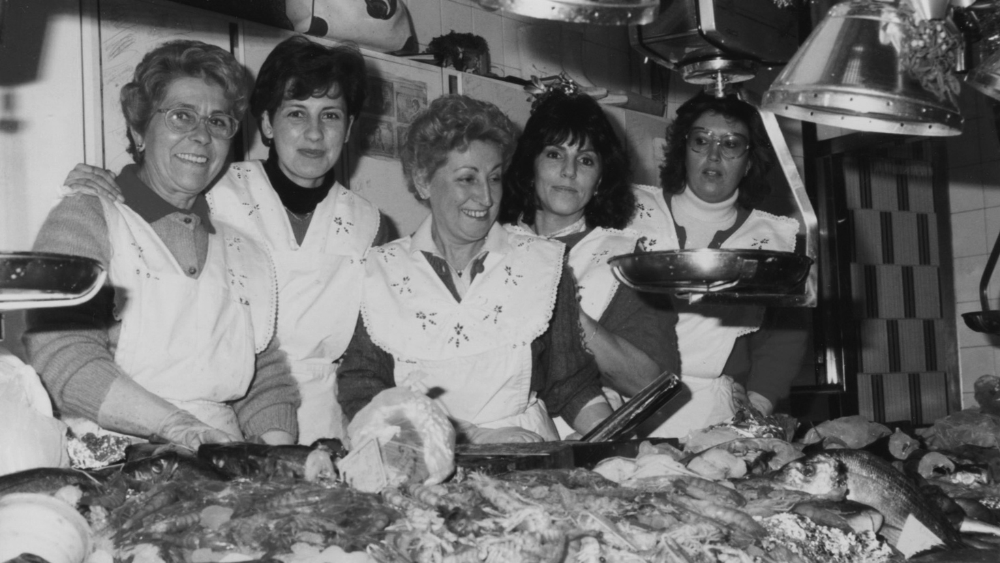
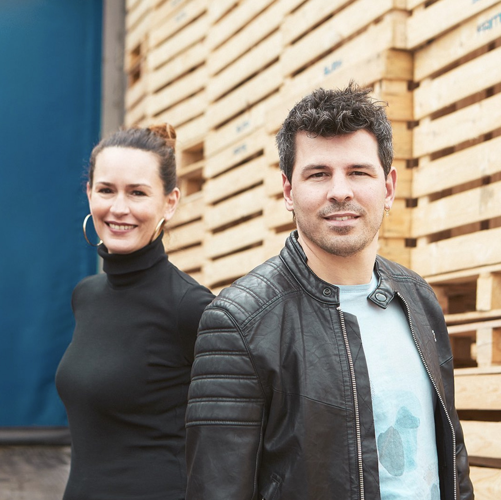

05 · Empresa familiar
Slowfish
Slowfish es una empresa mayorista de pescado de Mercabarna con una historia familiar de más de 130 años. El interés documental está en cómo el oficio se transmite, se transforma y conserva la huella de las mujeres que lo hicieron crecer.


Historia familiar
La historia publicada por la empresa comienza con Teresa, que llegó de Tarragona a Barcelona y vendía cucuruchos de gambas en el Liceu antes de abrir un primer local en Mataró en 1893. En 1927, Mercè abrió una parada en el Mercat Galvany. Después continuaron Joan y Mariona, su hija Mariona y, hoy, Gemma y Joan.
Propuesta
Acompañarlos durante una noche de trabajo para entender cómo llega el pescado, cómo se selecciona y prepara, y quién participa. Conversar sobre la transmisión del oficio, los cambios del negocio y aquello que permanece entre generaciones.
Conexiones
Esta historia puede dialogar con Donnes al Mar, con Cristina Mañas y las pescadoras jóvenes de Palamós, y con la convocatoria fotográfica de Carbopesca sobre mujeres vinculadas al mar.